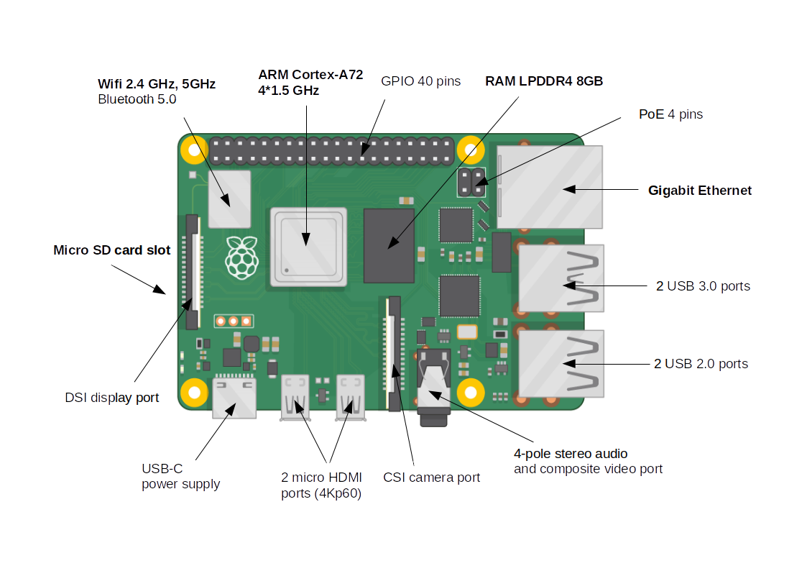

MEROO : My Experimental R-Oriented data Operator
Un écosystème logiciel libre pour l’enseignement des sciences des données sur un cluster de Raspberry Pi.
F. BLANCHARD ![]()
CReSTIC, URCA
G. DOLLÉ
LMR UMR CNRS/URCA 9008
P. REGNAULT
LMR UMR CNRS/URCA 9008
22 juin 2023
La fondation Raspberry Pi
- Association caritative Britannique fondée en 2009.
- But : promouvoir l’apprentissage de la programmation et du « digital making » auprès des enfants et adolescents.
- Développe des nano-ordinateurs économiques, reposant sur l’usage de logiciels libres.
- Produit-phare : Raspberry Pi (RPi) 4B (2019), le plus performant de la gamme.

